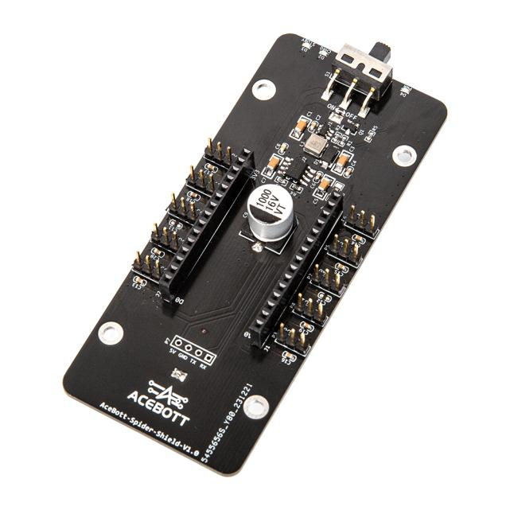

QZ041 Spider Shield V1.0¶
1.Introduction
Spider-Shield-V1.0 is the expansion board of the quadruped robot, which is connected to the ESP8266 controller board. The expansion board has 10 pin ports and can connect 8 servos. The bottom contains the 18650 battery cabin, which can operate the movement of the robot offline after the battery is configured. At the same time, after connecting the ESP8266 motherboard, the 18650 battery can be charged by connecting the power supply through the Type-c line.
There are two charging indicators on the extension board, “CHRG” indicates that the battery is charging, and “STDBY” indicates that the battery is full. Through the use of the expansion board, users can easily operate multiple servos to complete different actions.
2.Features
8 digital pins with 3 pins each
1 analog pin with 3 pins
2 rows of pins compatible with ESP8266
1 compartment for 18650 battery
1 battery status indicator light
1 power toggle switch
Has the function of charging 18650 battery
3.Specifications
Size：103.9mm*44.7mm
Weight：31g
4.Sample Code
After inserting the ESP8266 mainboard into the pin slots of the extension board, connect a servo to the D4 pin port on the extension board. Install a 18650 battery, then upload the program to control the servo.
（1）Wiring Diagram
（2）Sample Code
1 2 3 4 5 6 7 8 9 10 11 12 13 14 15 16 | #include <Servo.h>
Servo myservo;//create servo object to control a servo
void setup() {
myservo.attach(D4);//attaches the servo on GPIO2 to the servo object
}
void loop() {
int pos;
for (pos = 10; pos <= 170; pos += 1) { //goes from 0 degrees to 180 degrees
myservo.write(pos);//tell servo to go to position in variable 'pos'
delay(15);//waits 15ms for the servo to reach the position
}
for (pos = 170; pos >= 10; pos -= 1) { //goes from 180 degrees to 0 degrees
myservo.write(pos);//tell servo to go to position in variable 'pos'
delay(15);//waits 15ms for the servo to reach the position
}
}
|
5.Test Result
After uploading the program, toggle the switch to ON, and you will observe continuous oscillation of the servos, producing a swinging motion from left to right.
6.Related Resources